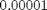

EQUITY IMPLIED VOLATILITY
CHANGE EQUITY STRIKE BASIS
The main purpose of the class is to transform an equity volatility surface from one basis to another. Allowable basis are spot strikes and forward strikes
Note we assume that all time variables are in increasing order
Contents
%MATLAB CODE %%%%%%%%%%%%%%%%%%%%%%%%%%%%%%%%%%%%%%%%%%%%%%%%%%%%%%%%%%%%%%%%%%%%%%%%%%% classdef bsEquityStrikeBasis
How to Use the Class
Step 1: The fuction [FindIndexPrices()] returns an 1-dim array of forward index prices against the option maturities
Step 2: The function [CreateStrikeMatrix()] then allows us to transform a spot strike basis to a forward strike basis by multiplying the spot strikes by the forward index prices; or to transform a forward strike basis to a spot strike basis by dividing the forward strikes by the forward index prices
Step 3: To find equity implied volatilities on the new strike basis, we use a bi-linear-interpolation approximation in [CreateNewIVMatrix()]
Properties
These are global parameters which are available to all methods in this class.
[IVs] - implied volatilities
Data Type: 2-dim array
[OptionMat] - option maturities
Data Type: 1-dim array
[CurrStrikesMoney] - current option strike moneyness
Data Type: 1-dim array
[NewStrikesMoney] - new option strike moneyness
Data Type: 1-dim array
[FwdPrices] - forward index prices
Data Type: 1-dim array
[FwdMat] - forward index maturities
Data Type: 1-dim array
[Tolerance] - permissible limit of variation, 
Data Type: single value
[NumofMat] - number of option maturities
Data Type: single value
[NumofCurrStrikes] - number of current option strike moneyness
Data Type: single value
[NumofNewStrikes] - number of new option strike moneyness
Data Type: single value
%MATLAB CODE %%%%%%%%%%%%%%%%%%%%%%%%%%%%%%%%%%%%%%%%%%%%%%%%%%%%%%%%%%%%%%%%%%%%%%%%%%% properties IVs OptionMat CurrStrikesMoney NewStrikesMoney FwdPrices FwdMat Tolerance = 0.00001; NumofMat NumofCurrStrikes NumofNewStrikes end %%%%%%%%%%%%%%%%%%%%%%%%%%%%%%%%%%%%%%%%%%%%%%%%%%%%%%%%%%%%%%%%%%%%%%%%%%%
List of Methods
This bootstrap class introduces the following methods:
1) [CreateNewIVMatrix()] - Function transforms an existing implied volatility matrix into a new implied volatility matrix using linear-interpolation
2) [CreateStrikeMatrix()] - Function transforms a spot strike basis to a forward strike basis and vice-versa
3) [FindIndexPrices()] - Function calculates forward index prices which are used to transform between different strike bases
%MATLAB CODE %%%%%%%%%%%%%%%%%%%%%%%%%%%%%%%%%%%%%%%%%%%%%%%%%%%%%%%%%%%%%%%%%%%%%%%%%%% methods
function obj = bsEquityStrikeBasis(ImpliedVolatilities, ... OptionMaturities, CurrStrikeMoneyness, ForwardIndexPrices, ... ForwardIndexMaturities, NewStrikeMoneyness) obj.IVs = ImpliedVolatilities ; obj.OptionMat = OptionMaturities; obj.CurrStrikesMoney =CurrStrikeMoneyness; obj.NewStrikesMoney =NewStrikeMoneyness; obj.FwdPrices =ForwardIndexPrices; obj.FwdMat =ForwardIndexMaturities; obj.NumofMat = size(OptionMaturities,2); obj.NumofCurrStrikes =size(CurrStrikeMoneyness,2); obj.NumofNewStrikes =size(NewStrikeMoneyness,2); end %%%%%%%%%%%%%%%%%%%%%%%%%%%%%%%%%%%%%%%%%%%%%%%%%%%%%%%%%%%%%%%%%%%%%%%%%%%
Details of Methods
_______________________________
1) [CreateNewIVMatrix()]
'''''''''''''''''''''''''''''''''''''''''''''''''''''''''''''''''''''''''''''''''''''
Description
Function transforms an existing implied volatility matrix into a new implied volatility matrix using linear-interpolation. The function also provides a "truncation" choice whereby the user can choose to limit the calculated volatility matrix to be within the bounds of the input implied volatility. Truncation option helps prevent the calculated implied volatility from becoming unreasonably small or large as a consequence of using the crude linear interpolation method.
Inputs
[newStrikeType] - new option strike type: 'forwardstrike' or 'spotstrike'
Data Type: string
[Truncate] - whether to truncate the volatility matrix: 'True' or 'False'
Data Type: string
Outputs
[CreateNewIVMatrixReturn] - An implied volatility matrix with "maturity" against "moneyness" on a new strike basis
Data Type: 2-dim array
Calculation
To apply the linear-interpolation method, we call the function [LinearMatrix()] in the class [bsLinearInterpolation()].
The inputs for the function [LinearMatrix()] inlcude: a matrix of current strikes and a matrix of new strikes, both obtained from the function [CreateStrikeMatrix()], and an existing implied volatility matrix.
See [LinearMatrix()] for details of the linear-interpolation technique.
%MATLAB CODE %%%%%%%%%%%%%%%%%%%%%%%%%%%%%%%%%%%%%%%%%%%%%%%%%%%%%%%%%%%%%%%%%%%%%%%%%%% function CreateNewIVMatrixReturn = CreateNewIVMatrix(obj,newStrikeType,Truncate) [CurrStrikes,NewStrikes] = obj.CreateStrikeMatrix(newStrikeType); newLinearInterp = Bootstrap.bsLinearInterpolation(); CreateNewIVMatrixReturn = newLinearInterp.LinearMatrix(NewStrikes,CurrStrikes,... obj.IVs,Truncate); end %%%%%%%%%%%%%%%%%%%%%%%%%%%%%%%%%%%%%%%%%%%%%%%%%%%%%%%%%%%%%%%%%%%%%%%%%%%
_______________________________
2) [CreateStrikeMatrix()]
'''''''''''''''''''''''''''''''''''''''''''''''''''''''''''''''''''''''''''''''''''''
Description
Function transforms a 2-dim matrix of spot strikes with "maturity" against "moneyness" to a 2-dim matrix of forward strikes with the same "maturity" against the same "moneyness" and vice-versa.
Note that we express strikes as % of initial equity price.
Inputs
[newStrikeType] - new option strike type: 'forwardstrike' or 'spotstrike'
Data Type: string
Outputs
[CurrStrikes, NewStrikes] - An array of two 2-dim matrices with "maturity" against "moneyness". One is of current strikes, the other of new strikes.
Data Type: an array of two 2-dim arrays
Calculation
Step 1: Create a matrix of current strikes by repeating the "moneyness" row for each maturity, i.e. given a moneyness, the strikes stay constant as the maturity increases.
Step 2: Find an 1-dim array of forward index prices with the same maturities as the options'. See [FindIndexPrices()] for details of calculation.
Step 3: Set up a new matrix of the same size as the matrix of current strikes. To find the new strike values, depending on the [newStrikeType], if "forwardstrike", we scalar multiply the current strikes by the forward index prices from Step 2; if "spotstrike", we scalar divide the current strikes by the forward index prices.
%MATLAB CODE %%%%%%%%%%%%%%%%%%%%%%%%%%%%%%%%%%%%%%%%%%%%%%%%%%%%%%%%%%%%%%%%%%%%%%%%%%% function [CurrStrikes, NewStrikes] = CreateStrikeMatrix(obj,newStrikeType) CurrStrikes = repmat(obj.CurrStrikesMoney,obj.NumofMat,1) ; NewStrikes = zeros (obj.NumofMat, obj.NumofNewStrikes); IndexPrices = obj.FindIndexPrices() ; if strcmp(lower(newStrikeType), 'spotstrike') NewStrikes = ( 1 ./IndexPrices)' * obj.NewStrikesMoney ; else strcmp(lower(newStrikeType), 'forwardstrike') NewStrikes = IndexPrices' * obj.NewStrikesMoney ; end end %%%%%%%%%%%%%%%%%%%%%%%%%%%%%%%%%%%%%%%%%%%%%%%%%%%%%%%%%%%%%%%%%%%%%%%%%%%
_______________________________
3) [FindIndexPrices()]
'''''''''''''''''''''''''''''''''''''''''''''''''''''''''''''''''''''''''''''''''''''
Description
Function looks up the forward index prices with the same maturities as the options'
Inputs
None
Outputs
[FindIndexPricesValues] - forward index prices with the same maturities as the options'
Data Type: 1-dim array
Calculation
We use linear interpolation (with truncation) to find either an exact or approximate forward index price
%MATLAB CODE %%%%%%%%%%%%%%%%%%%%%%%%%%%%%%%%%%%%%%%%%%%%%%%%%%%%%%%%%%%%%%%%%%%%%%%%%%% function FindIndexPricesValues = FindIndexPrices(obj) newLinearInterp = Bootstrap.bsLinearInterpolation(); FindIndexPricesValues = newLinearInterp.LinearArray(obj.OptionMat,... obj.FwdMat, obj.FwdPrices, 'true'); end %%%%%%%%%%%%%%%%%%%%%%%%%%%%%%%%%%%%%%%%%%%%%%%%%%%%%%%%%%%%%%%%%%%%%%%%%%%
end
end